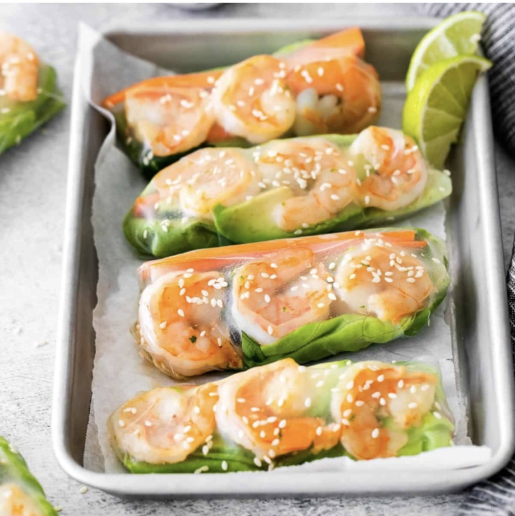

My Favorite Recipes
Penne Bolognese
origin: Indiana
Source: Best Friend's go to meal
Category: Dinner

penneboleognese.jpg
My best friend was trying out fast, nutritious, and delicious recipes that could fit his on the go lifestyle at college. He has always been a foody and was tired of eating the same thing every day at the dining hall. He figured out the perfect recipe with simple ingredients and makes it taste like restaurant quality! Note, the pasta is best a tad undercooked, or aldente.
Recipe Ingredients
Any type of uncooked pasta you prefer, but I recommend penne or rigatoni.
Ragú's traditional sauce
Olive Oil
ground beef, or any ground protein of your choice
Recipe Steps
Step 1: Start boiling a large pot of water over the stove, and let that sit while you prepare the rest.
Step 2: Take a pan and put olive oil on the bottom, set your stove to medium heat.
Step 3: Put your ground beef in the pan, and lightly stir it until the meat is cooked.
Step 4: Pour in all of your sauce into the pan and mix it in with the meat.
Step 5: Stir it lightly, but then let it sit so the meat can absorb the sauce.
Step 6: By now, your water should be boiling, so throw in your pasta and wait about 10 minutes for that to cook.
Step 7: Once the pasta is ready, dump it into the pan with your meat and sauce, and stir it together.
Step 8: Serve it in a bowl and let it cool.
Step 9: Enjoy!
Additional Food Images
ragusauce.jpg
Jar of ragu sauce used for the recipe
penne.jpg
The penne pasta brand that I recommend
beef.jpg
What the ground beef should look like when cooked in the pan
Rachel Sonnett
Salmon Bowls
origin: California
Source: My favorite meal to cook for dinner with my family.
Category: Main Dish

salmonbowls.jpg
My mom always used to make my sister and I salmon teryaki with rice, so as I got older and started to cook for myself, I wanted to create my take on it. I love poke bowls, so I decided to use that as inspiration, but use cooked salmon instead.
Recipe Ingredients
white rice that you are able to cook with your means (rice cooker, microwave, etc)
Raw filet of salmon
Olive Oil
vegetables of your choice, I like cucumbers and avacados
Eel Sauce, Teryaki sauce, or soy sauce
Recipe Steps
Step 1: Cook your rice, follow the directions on the package you have.
Step 2: Take a pan and put olive oil on the bottom.
Step 3: Cut your raw salmon into cube size chunks.
Step 4: Put your salmon in the pan, and wait about 5 minutes, then flip it over and do the same. You'll know it's done when the salmon is light pink all the way through and lightly browned on both the top and bottom.
Step 5: Turn off the pan and let the salmon cool.
Step 6: Cut up your vegetables of choice into small pieces.
Step 7: Put your rice into a bowl, and top it with your salmon cubes and veggies.
Step 8: Drizzle your sauce of choice over
Step 9: Enjoy!
Additional Food Images
whiterice.jpg
Instant white rice that is quick and easy especially for college students
eelsauce.jpg
Bottle of eel sauce, which is my favorite for this recipe.
salmon.jpg
The salmon fillets that should be used.
Rachel Sonnett
Summer Rolls
origin: Maryland
Source: My friend's favorite pescetarian recipe!
Category: Appetizer

summerrolls.jpg
One of my best friends here at school is pescatarian, and now that we live together, she has shared this refreshing and delicious recipe with me that is a great appetizer or afternoon snack.
Recipe Ingredients
mini raw shrimp
Vegetables of your choice, but I recomend cucumber, carrots, bean sprouts, and gem lettuce.
Rice paper
peanut sauce
olive oil
Recipe Steps
Step 1: place a pan on the stove and spread olive oil on it.
Step 2: Heat your stove to medium.
Step 3: Place as many pieces of shrimp onto the stove to cook and let sit.
Step 4: Slice your vegetables into thin strips about 6 inches long.
Step 5: Dip your rice paper piece into a bowl of water so it gets soft.
Step 6: Lay your vegetables and shrimp on the center of the rice paper.
Step 7: Roll the rice paper and fold it like a burrito.
Step 8: Pour your sauce into a dipping bowl.
Step 9: Enjoy!
Additional Food Images
shrimp.jpg
Mini frozen shrimp that is easy to cook and affordable and efficient for college students
ricepaper.jpg
This is a great brand of rice paper that is explicitly meant for making spring rolls.
veggies.jpg
This is what the vegetables should look like when you slice the vegetables.
Rachel Sonnett